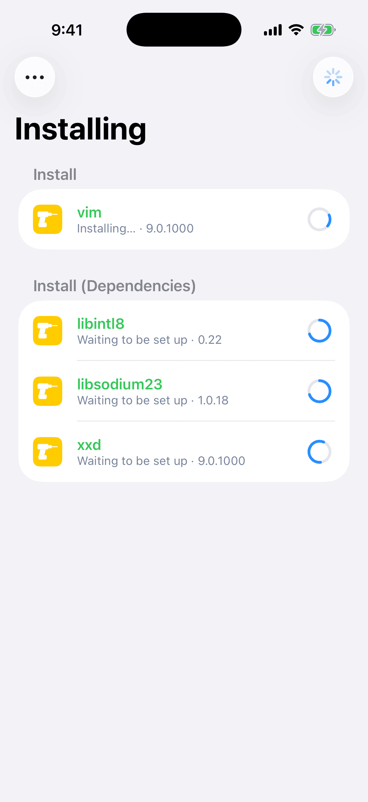
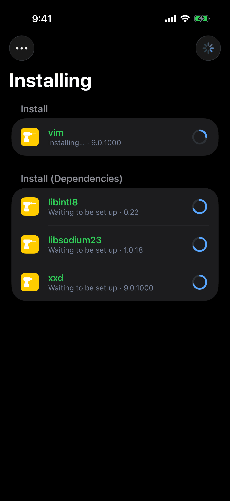
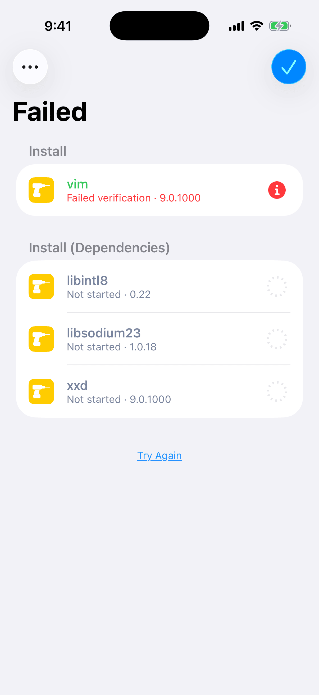
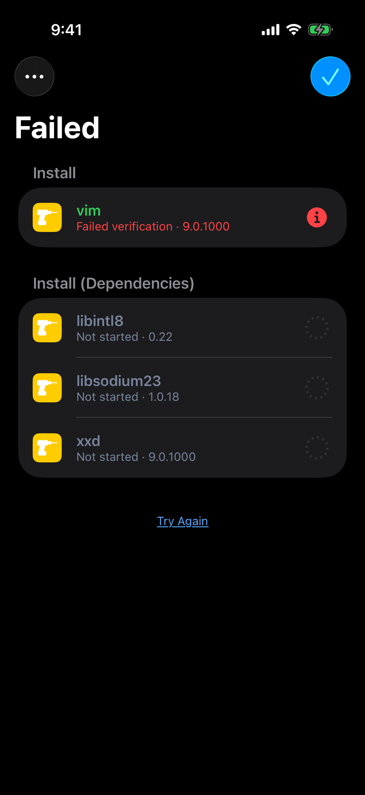
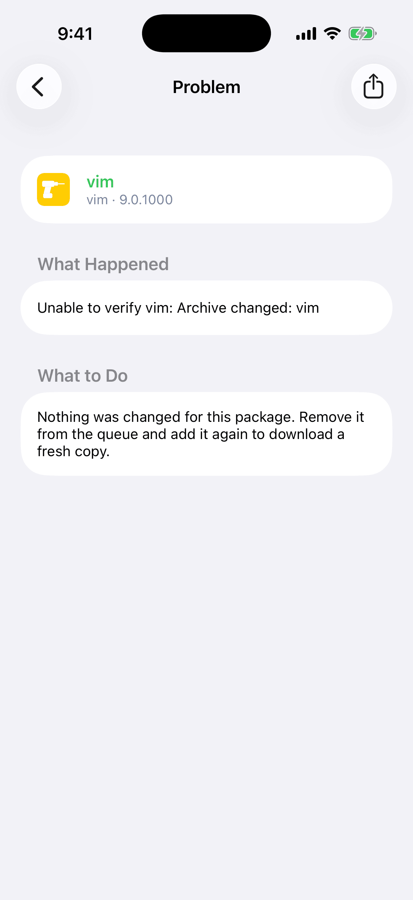
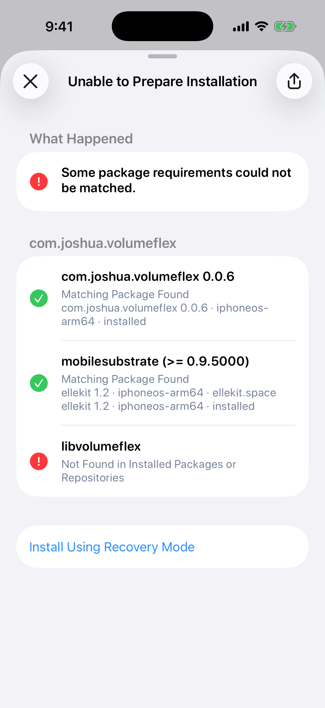
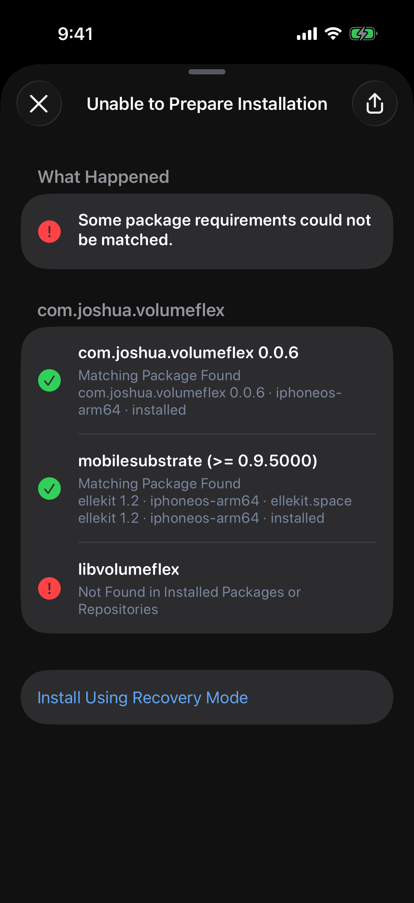

Irisin does not roll back a failed install. It tells you what is true of each package and what to do next. This chapter shows where it says so.
Find Your Problem
Start from what you see.
- Marked rowthe step that failed
- Problemthe reason and the fix
- View Full Logevery line the installer said
- Export Installer Loga file to attach
- Report Issuein Settings, under Support
Read a log before you attach it: the app log holds your searches and repository addresses.
Each row below names something you see, says what it means, and points to where it is covered.
| What You See | What It Means | Where to Go |
|---|---|---|
| The operation page's title changes to Failed | The run stopped at one package, and the packages before it stay changed. | Read the Operation Page, then Try Again |
| A sheet is titled Unable to Prepare Installation | Irisin could not plan the change, and nothing ran. | When a Plan Cannot Be Made |
| Unsupported Architecture appears when Irisin opens, and the interface never loads | The Irisin package you installed is built for the other bootstrap. | If It Says Unsupported Architecture |
| A package's button reads Unsupported | The package is not built for this device. | A Package's Page, and Compatibility Mode for rootless packages on roothide |
| A message mentions compatibility mode, or Patch fails | The package was refused before anything reached the installer, so nothing on the device changed. | What Is Refused |
| A package's menu has no Install, Update, or Remove | The menu offers only what fits the package's state, and none of the three while the package is in the queue. | The Package Menu |
| An update does not show up | It comes from another repository, it is blocked, or it would have to be converted. | When an Update Is Missing |
| The wrong package or version got installed | A package you did not want is a removal; a version you did not want is a downgrade. | The Installed Page, then Choose Version |
| A package cannot be removed | The system requires it, and Irisin refuses until you allow it. | Power Operations |
| An installed app's icon is missing from the Home Screen | The packages changed, and the Home Screen was not updated with them; Rebuild Icons updates it. | System |
| You read You can browse, but not install. Install the Irisin package. | The app is on the device without the package that brings its installer. | Browsing Only |
| A repository has a red dot, or is empty | It sent no packages, gave no information about itself, or has not been fetched for 24 hours. | Refresh and Status |
| Irisin itself will not open, or does not work properly | A reset clears Irisin's own repositories, downloads, logs, and settings. Your installed packages stay. | Irisin in the Settings App |
Read the Operation Page
When you run the queue, the operation page opens. Its title is Installing while work runs, whatever the changes are, and then Completed or Failed. You cannot pull the page down to close it. The list is the queue you reviewed, grouped the same way, with one ring per package.
While the operation runs, each row's second line is the step it is on:
- Waiting, or Waiting to be set up when setting up is the only step the package has left.
- Checking…, Removing…, Installing…, Setting up…, or Processing triggers…
- Running postinst… while one of the package's scripts runs.
- A finished row shows a green check and Installed, Removed, Updated, Downgraded, or Reinstalled.
When every row is done and the installer is still working, Finishing installation… appears under the list. It goes away as soon as the result is known.


After a failure, each row says what is true of its package:
| The Row Says | Its Mark | What It Means |
|---|---|---|
| Failed while removing, Failed while installing, Failed while setting up, or Failed verification | A red mark in place of the ring | This is the package that stopped the run. When one of its own scripts stopped it, the line names the script instead: The postinst script failed. |
| Needs repair | A red mark | The package was left half-installed. |
| Unpacked, not set up | An amber mark | The package's files are in place, and the run stopped before its turn to be set up. |
| Completed with warnings | An amber mark | The package finished although one of its scripts failed. |
| Not started | A dashed, empty ring | The run never reached this package. |
| Installed, Removed, Updated, Downgraded, or Reinstalled | A green check | The package was changed before the run stopped, and it stays changed. |
Only a row with a red or amber mark can be tapped. It opens that package's own page: see A Package's Problem Page.


When the operation has ended, a Warnings section may appear at the end of the list. It holds what belongs to no single package. When the operation failed and no row carries the failure, the reason is the first line there.
A red banner above the list applies to the whole run, not to one package. It reads Recovery Mode or Ignoring Configuration Errors. See Recovery Mode and Try Again.
When the operation ends, a checkmark appears at the top right, and tapping it closes the page. After a success, the … menu at the top left adds Rebuild Icons and Reload Home Screen. Use the first if you read Packages were changed, but the home screen was not updated. Choose Rebuild Icons to try again. System describes both.
If It Looks Stuck
After two minutes without a word from the installer, a Hide button appears beside the … menu. It closes the page only: the operation keeps running and keeps writing its log. Any new line from the installer takes Hide away again.
A Package's Problem Page
Tap a marked row on the operation page. A page titled Problem opens with the package at the top, then What Happened, then What to Do. A fourth section, Script Output, appears only when the package's scripts printed anything.

What Happened is the installer's own reason, in your language. For a script it reads, for example, The postinst script of Example failed with exit status 1. For a package that another package's failure left behind, it reads This package was unpacked, but the operation stopped at another package before this one was set up. If the installer stopped at this package and gave no reason, the page says so: The installer stopped while it was working on this package and did not say why.
What to Do depends on the step that failed. Each row below says what the package is now and quotes the page's advice.
| The Package | What It Is Now | The Page's Advice |
|---|---|---|
| It failed verification | The package is untouched. | Nothing was changed for this package. Remove it from the queue and add it again to download a fresh copy. |
| It failed while installing | The package is back as it was before. | The package was put back as it was before. Go back and choose Try Again. |
| It failed while removing | The package is still installed. | The package is still installed. Go back and choose Try Again. |
| It failed while setting up | Its files are in place, and it is not set up. | The package's files are in place, but it is not set up and may not work. Go back and choose Try Again, or remove the package. |
| Another package's failure left it unpacked | Its files are in place, and it is not set up. | Go back and choose Try Again to finish setting up this package. |
| It needs repair | The package was left half-installed. | The package is half-installed. Install it again to repair it, or remove it. |
| It finished, and a script failure was ignored | The change was made, although one of the package's scripts failed. | Review the script output. If the package does not work, remove it or install a fixed version. |
The share button gives a plain-text report: the package, its versions, the installer's reason, and the script output. The reason in the report is in English, whatever your language, because the report is for the package's maintainer.
Try Again
After a failure, a small Try Again link appears under the list. It does not repeat the old plan. It plans again from what the failed run left on the device, then runs that plan on a new page in the same sheet.
If it cannot, an alert titled Unable to Try Again gives the reason, which is one of those listed in When a Plan Cannot Be Made or one of the two below. Tap Dismiss to close it.
- Packages changed. Review the changes and try again. Something else changed your packages since the plan was made. Close the page, look at the queue, and tap Execute again.
- Packages changed while preparing the installation. Try again. The same happened while Irisin was preparing. Tap Try Again once more.
Ignore Script Errors and Retry
After a failure, the … menu, labeled More, adds Ignore Script Errors and Retry. It is not offered while an operation runs, after a success, or in Recovery Mode.
- Open the package's Problem page and read Script Output.
- Go back, open the … menu, and choose Ignore Script Errors and Retry.
- Read the alert. Its title is Ignore Script Errors and Retry? and its message is Irisin will retry the operation and continue if a package script fails. This can damage installed packages or the system.
- Tap Retry, in red, or Cancel.
The retry runs under the red Ignoring Configuration Errors banner. A package whose script fails then finishes anyway and ends as Completed with warnings. Use it only when the Problem page shows a script failure you have read and judged harmless.
When a Plan Cannot Be Made
Irisin checks that a change is possible before anything runs. When it is not, the sheet is titled Unable to Prepare Installation, and the reason is under What Happened. Below it is one group per package that failed a check, and every check in the group carries a green check or a red mark with a verdict under it. Some reasons come with no checks, and then the reason is the whole page.


A check ends in one of seven verdicts:
- Matching Package Found
- Not Found in Installed Packages or Repositories
- Found for a Different Architecture, followed by This device supports iphoneos-arm64.
- No Version Meets This Requirement
- Package Metadata Could Not Be Read
- Requirements Conflict
- Required by the System
Most reasons carry their own advice. They are grouped below by what you do about them, with Example standing for a package's name. A reason that is not listed says what could not be matched and has no single fix: read it on the page, and the checks under it show which package to look at.
- A requirement is missing. Example requires libexample, which is not available. Add a repository that provides it and try again.
- Two packages conflict. Example conflicts with Other. Remove one of them and try again.
- The repository's data is unreadable or out of date. Refresh the repository (see Refresh and Status) and try again. Four reasons end this way:
- Example: the repository sent an unreadable version. Refresh the repository and try again.
- Example 1.0: the repository sent unreadable package information. Refresh the repository and try again.
- Example: no version is available from its repository. Refresh the repository and try again.
- Example: this version is not available from its repository. Refresh the repository and try again.
- A half-installed package is in the way. Example did not finish installing. Install it again before making other changes.
- The system requires the package. Example is required by the system and cannot be removed. or Example is needed by Other, which the system requires, so it cannot be removed. See Power Operations.
- The package is on hold. Example is on hold and cannot be changed. Remove the hold and try again.
- The queue asks for too much at once. These packages could not be installed in a valid order: Example, Other. Remove some of them from the queue and try again. Or The installation order could not be planned. Try again with fewer changes. Or Example could not be resolved to a single version. Clear the queue and try again.
- You chose Update All. Updating everything would remove installed packages. Update packages one at a time.
- Irisin is busy. Another operation is already running. Wait for it to finish, then try again. or Packages changed while checking dependencies. Try again.
The share button gives the reason and every check as text. Send that when you ask someone for help.
Recovery Mode
Recovery Mode is a last resort for one package. It is offered only on the Unable to Prepare Installation sheet, and only when you asked for a single change. It installs or removes that package without checking what it needs or what needs it, and it carries on when the package's scripts fail.
- Install Using Recovery Mode appears for a package whose file is already on the device, either a
.debyou opened or one already downloaded, and that this device can install. - Remove Using Recovery Mode appears for an installed package that is not on hold. For a package the system requires, it appears only while Power Operations is on.
- Tap the row. An alert asks Install in Recovery Mode? or Remove in Recovery Mode?
- Read the message. It states the risk: the package may not work, and other packages or the system may stop working.
- Tap Install Anyway or Remove, both in red, or Cancel.
- Wait while Preparing… is shown. The operation page then opens under the red Recovery Mode banner, which stays for the whole run.
The package's file is still verified and, on roothide, still converted. Only the dependency checks are skipped. Try Again on a failed recovery run retries the same package in Recovery Mode, not the queue. Ignore Script Errors and Retry is not offered there, since a recovery run already ignores them.
Two refusals are possible. This package cannot be installed in Recovery Mode on this system. means the package has no file on the device, or is built for an architecture this device cannot install. Unable to prepare the installation. Try again. means the preparation failed and left no reason.
Power Operations
Power Operations is a switch, off by default. While it is off, Irisin will not plan the removal of a package the system requires, and says so: Example is required by the system and cannot be removed.
- Open Settings from the gear on Dashboard and find Packages → Power Operations.
- Turn the switch on. It stays off until you answer the alert titled Allow Power Operations?
- Read the message: Removing a package the system requires can stop the custom firmware or this app from working.
- Tap Allow, in red, or Cancel.
The packages that count are apt, dpkg, firmware, bash, coreutils, base, base-files, base-passwd, libroot, roothide, and any package its maker marked essential or protected. A package on hold is never removed, whatever the switch says.
Turning the switch off asks nothing and takes effect at once. The switch is read when you run, not when you plan: turn it off again and a removal that was waiting is refused. Turn it off when you are done.
Browsing Only
The Irisin app cannot install anything by itself: the Irisin package brings the installer that does. Without that package, you can browse repositories and packages, and nothing else.
You see it in three places:
- The last line of the Settings footer reads You can browse, but not install. Install the Irisin package.
- An operation fails, with the same sentence as its reason.
- Reload Home Screen in Settings answers with an alert titled Browsing Only and the message Install the Irisin package to use this action.
Connecting… in the footer for a moment after launch is normal. On a device that has the package, that line never turns into the browsing sentence. It waits until the installer answers.
Install the Irisin package for your bootstrap: see Choose Your Package. Two related messages mean the package is there and something else is wrong. The installer could not be started. Try again. means the installer did not start, so try the operation again. Irisin is not installed correctly. Reinstall it and try again. means Irisin's own files are not where they belong. Install the Irisin package again.
The Logs
There are three places to read what happened.
| Log | Where to Read It | What It Holds |
|---|---|---|
| This operation's lines | On the operation page, open the … menu and choose View Full Log. The page is titled Operation Log, and its share button gives the lines as text. | Everything the installer said during one operation, numbered, in order. |
| The installer log | In Settings, open the … menu at the top right and choose Export… → Export Installer Log. | The same lines as a file, named irisin-install-<date>.log. |
| The app log | Read it at Settings → Support → View Logs, or take it as a file named irisin-<date>.log with Export… → Export App Log in the same menu. | What Irisin itself did, the installer's lines included. |
After a failed install, export the installer log before you try again. Each new install starts a fresh log. The run before it is kept on the device as irisin-install.log.previous beside irisin-install.log, but only the current one can be exported. When a log is empty, the export answers Nothing to Export.
In the installer's lines, a warning starts with [!] and a failure with [!!]. A successful run ends with Operation completed. If the installer itself crashed, the log adds The installer stopped (error code 9).
The Logs Page
View Logs opens a page titled Logs that keeps following the app log while it is open. Lines at the error and critical levels are tinted so you can spot them. Its … menu has five items:
- Errors Only switches between every level and the two worst,
errorandcritical. - Filter by Level lists the five levels as the app spells them,
verbose,info,warning,error, andcritical, and you turn each on or off by itself. - Filter by Category lists every category found in the log, with All Categories at the top.
- Share gives what the page has loaded as a file.
- Clear only hides what is on the page. Later lines keep arriving, and the file and Export App Log keep everything.
Touch and hold a line for Copy, which takes the whole line, or Copy Message, which takes the message alone.
Review a log before you share it. The app log records what you typed into search and the addresses of the repositories you added or removed. The installer log names the packages you changed and holds what their scripts printed.
Report Issue
- Make the problem happen again, so the logs hold it.
- Export the app log, and the installer log if an install failed, as The Logs describes. Do it before you try again.
- Read both files. The app log holds your searches and the addresses of your repositories, and the installer log names the packages you changed. Remove what you do not want public.
- Tap Settings → Support → Report Issue. It opens the project's new-issue page on GitHub in your browser, and it attaches nothing.
- Attach the logs. If one package failed, paste the report from its Problem page's share button.
- Quote the lines at the bottom of Settings, under License: the identifier with its version and build, the architecture and bootstrap, the iOS version and device model, and the installer's line. The Footer explains each.
A package that fails in its own script is usually the package's problem, not Irisin's. Send the Problem page's report to the package's maintainer.
Search the existing issues before you open a new one.